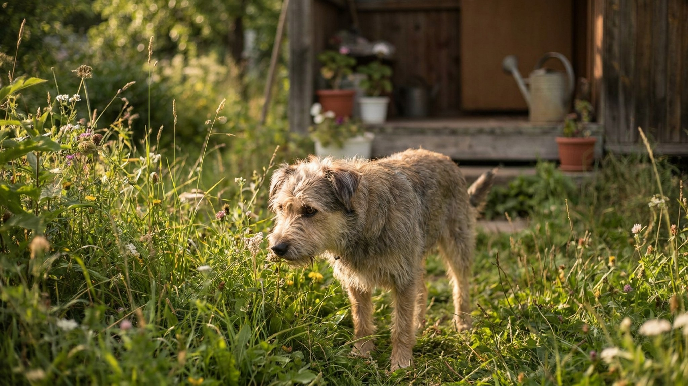

Первая неделя питомца на даче: 7 шагов без побегов и тревоги

6 июня 2026 · 9 минут чтения · Лето · Быт · Питомцы
Каждый сезон кто-то теряет питомца в первые дни на даче: незнакомое место, дыра в заборе, испуг от соседской собаки — и всё. Для городского питомца загород — это стресс, а не «природа». Первая неделя задаёт тон всему сезону: как её провести, чтобы не было побегов, конфликтов и недельной тревоги — в семи шагах.
🐾 Первая помощь — всегда под рукой
AnimaLife подскажет, что делать в тревожной ситуации с питомцем ещё до визита к врачу. Откройте в один тап.
Открыть AnimaLife → Открыть в MAX →
Шаг 1: проверьте периметр до приезда питомца
Это нужно сделать до того, как питомец окажется на участке. Пройдите весь периметр забора:
- Нет ли дыр, щелей или мест, где питомец может пролезть или перепрыгнуть.
- Ворота закрываются плотно и не оставляют зазора снизу.
- Нет ли ямок, в которые можно подкопать выход (особенно актуально для собак).
- Для кошек: любой забор не является препятствием. Если хотите держать кошку на участке — нужна специальная сетка или «анти-прыжковые» элементы наверху забора.
Лучше потратить час на проверку заранее, чем искать питомца в незнакомой местности.
Шаг 2: первые часы — в доме
Не выпускайте питомца сразу на участок. Сначала — в дом.
- Дайте обнюхать все комнаты без ограничений — это базовая разведка для питомца.
- Поставьте привычные вещи: его лежак, миску, игрушки. Запах своих вещей снижает тревогу.
- Не тащите на улицу «показывать», дайте самому выйти, когда будет готов.
- Кошку в первый день лучше вообще оставить в доме — пусть освоится с новым пространством в безопасных стенах.
Шаг 3: первое знакомство с участком — на поводке или рядом
Собаку выводите на поводке даже если она хорошо знает команду «рядом». Первый выход — это много стимулов сразу: запахи, звуки, другие животные за забором. Поводок даёт вам контроль, а собаке — ощущение безопасности рядом с хозяином.
Кошку на улицу в первые дни — тоже лучше на шлейке или в сопровождении. Некоторые кошки пугаются и мгновенно прячутся в недоступных местах.
- Первая прогулка по участку — 15-20 минут. Дайте понюхать всё, что интересно.
- Не тащите, не торопите, позвольте задавать темп.
- Заканчивайте прогулку до того, как питомец устал или перевозбудился.
Шаг 4: соседи и соседские животные
На дачных участках почти всегда есть соседи с животными. Лай за забором, кошки на заборе, куры в соседнем огороде — для городского питомца это новый мир.
- Не устраивайте «знакомство» с соседскими животными в первые дни. Дайте питомцу привыкнуть к звукам и запахам через забор.
- Если собака реагирует на лай соседней собаки — не ругайте, просто спокойно уведите или переключите внимание.
- Предупредите соседей о питомце — это уменьшает неожиданные ситуации.
🐾 Экономьте на лишних визитах к врачу
Сначала спросите AI-ветеринара в AnimaLife — часто этого достаточно, чтобы понять, нужен ли визит к врачу.
Спросить бесплатно → Спросить в MAX →
🐾 Понравился разбор?
Подпишитесь на канал — каждый день разбираем по одному тревожному симптому у кошек и собак: что в пределах нормы, а когда пора к врачу. Подпишитесь, чтобы не пропустить разбор, который может спасти здоровье вашего питомца.
Шаг 5: сохраните привычный режим
Первая ошибка на даче — сломать распорядок питомца под «дачный режим» хозяев. Питомец просыпается в 7, но хозяева на даче до 10? Покормите в привычное время.
- Кормление в то же время, что и в городе.
- Сон — в привычном месте, с привычными вещами.
- Игры и прогулки — схожей продолжительности.
Стабильный режим — якорь, который помогает питомцу чувствовать себя уверенно в незнакомом месте. Через неделю, когда адаптация пройдёт, можно постепенно менять расписание.
Шаг 6: опасности на участке
Дача — много интересного, но и много рисков, которых нет в квартире.
- Инструменты и химия для сада: удобрения, средства от сорняков, красители для заборов, антисептики для дерева — храните в закрытых шкафах или помещениях, недоступных питомцу.
- Компостная куча: для питомцев это источник запаха и часто — нежелательной «еды». Огородите или закройте.
- Бассейн, пруд, большие ёмкости с водой: см. правила безопасности у воды.
- Растения на участке: некоторые декоративные растения нежелательны для питомцев — нарциссы, ландыши, рододендроны, томатная ботва. Если питомец грызёт растения — обсудите конкретный список с ветеринаром.
- Клещи: обработку делают заранее и по схеме, которую рекомендует ветеринар.
Шаг 7: наблюдайте первые три дня особенно внимательно
В первые дни на даче питомец может:
- Отказываться от еды — небольшой стресс, норма для первых суток.
- Прятаться в доме и не выходить на улицу — дайте время.
- Быть гиперактивным и возбуждённым — слишком много новых стимулов.
- Нарушить режим туалета (у кошек — ходить мимо лотка при стрессе).
Всё это — нормальные реакции на смену среды. Если через 3-4 дня поведение не нормализуется (питомец по-прежнему не ест, прячется, не выходит на улицу) — обсудите со своим ветеринаром. Иногда адаптационный стресс требует поддержки.
Материал носит информационный характер и не заменяет очную консультацию ветеринара.
← Все статьи · Открыть AnimaLife в Telegram · RSS